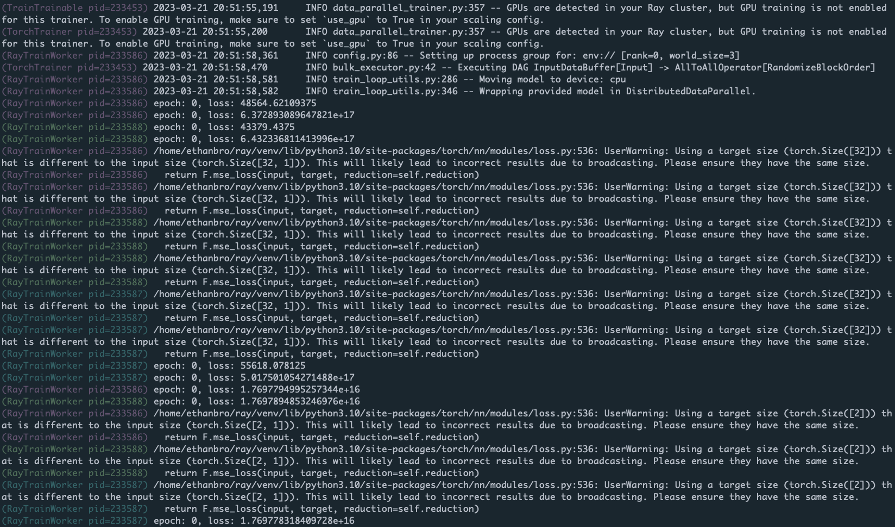
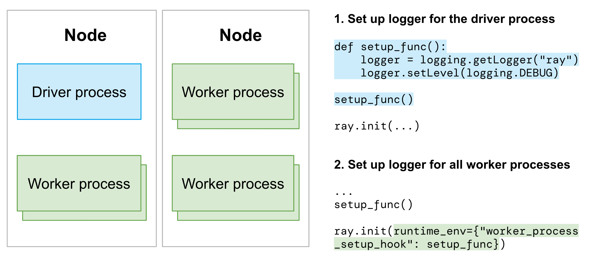

日志配置
Contents
日志配置#
本指南帮助您了解和修改 Ray 日志系统的配置。
日志目录#
默认情况下，Ray 日志文件存储在 /tmp/ray/session_*/logs 目录中。参阅下面的 日志目录中的日志文件 以了解它们在日志文件夹中的组织方式。
Note
Ray 使用 /tmp/ray （对于 Linux 和 macOS）作为默认临时目录。要更改临时目录和日志记录目录，请在调用 ray start 或 ray.init() 时指定它。
新的 Ray 会话会在临时目录中创建一个新文件夹。最新的会话文件夹符号链接到 /tmp/ray/session_latest。这是一个临时目录示例：
├── tmp/ray
│ ├── session_latest
│ │ ├── logs
│ │ ├── ...
│ ├── session_2023-05-14_21-19-58_128000_45083
│ │ ├── logs
│ │ ├── ...
│ ├── session_2023-05-15_21-54-19_361265_24281
│ ├── ...
通常，每当机器重新启动时，临时目录就会被清除。因此，每当您的集群或某些节点停止或终止时，日志文件都可能会丢失。
如果您需要在集群停止或终止后检查日志，则需要存储并持久化日志。查看有关如何处理和导出 虚拟机集群 和 KubeRay 集群 的说明。
日志目录中的日志文件#
以下是日志目录中的日志文件。一般来说，存在两种类型的日志文件：系统日志文件和应用程序日志文件。
请注意， .out 日志来自 stdout/stderr ， .err 日志来自 stderr。不保证日志目录的向后兼容性。
Note
系统日志可能包含有关您的应用程序的信息。例如，runtime_env_setup-[job_id].log 可能包括有关应用程序环境和依赖性的信息。
应用程序日志#
job-driver-[submission_id].log: 使用 Ray Jobs API 提交的作业的标准输出。worker-[worker_id]-[job_id]-[pid].[out|err]: Ray driver 和 worker 的 Python 或 Java 部分。来自任务或 actor 的所有 stdout 和 stderr 都会流式传输到这些文件。请注意，job_id 是驱动程序的 ID。
系统（组件）日志#
dashboard.[log|err]: Ray Dashboard 的日志文件。.log文件包含从仪表板记录器生成的日志。.err件包含从仪表板打印的 stdout 和 stderr。它们通常是空的，除非仪表板意外崩溃。dashboard_agent.log: 每个 Ray 节点都有一个仪表板代理。这是代理的日志文件。gcs_server.[out|err]: GCS 服务器是管理 Ray 集群元数据的无状态服务器。它只存在于头节点中。io-worker-[worker_id]-[pid].[out|err]: 从 Ray 1.3+ 开始，Ray 默认创建 IO 工作线程以将对象溢出/恢复到外部存储。这是 IO 工作线程的日志文件。log_monitor.[log|err]: 日志监视器负责将日志流式传输到驱动程序。.log文件包含从日志监视器的记录器生成的日志。.err文件包含从日志监视器打印的 stdout 和 stderr。它们通常是空的，除非日志监视器意外崩溃。monitor.[out|err]: 集群启动器的标准输出和标准错误。monitor.log: Ray 的集群启动器通过监控进程运行。它还管理自动缩放器。plasma_store.[out|err]: 弃用。python-core-driver-[worker_id]_[pid].log: Ray 驱动程序由 CPP 核心和 Python 或 Java 前端组成。 CPP 代码生成此日志文件。python-core-worker-[worker_id]_[pid].log: Ray Workers 由 CPP 核心和 Python 或 Java 前端组成。 CPP 代码生成此日志文件。raylet.[out|err]: raylet 的日志文件。redis-shard_[shard_index].[out|err]: Redis 分片日志文件。redis.[out|err]: Redis 日志文件。runtime_env_agent.log: 每个 Ray 节点都有一个代理来管理 运行时环境 的创建、删除和缓存。 这是代理的日志文件，包含创建或删除请求以及缓存命中和未命中的日志。 有关实际安装的日志（例如pip install日志），请参阅该文件runtime_env_setup-[job_id].log（见下文）。runtime_env_setup-ray_client_server_[port].log: Ray Client 连接 job 的 运行时环境 安装日志。runtime_env_setup-[job_id].log: 任务，actor，job 的 运行时环境 安装日志。仅当安装了运行时环境时此文件才存在。
将工作日志重定向到驱动程序#
默认情况下，任务和 Actor 的 Worker 标准输出和标准错误流到 Ray 驱动程序（调用 ray.init 的入口点脚本）。它帮助用户将分布式 Ray 应用程序的日志聚合在一个位置。
import ray
# Initiate a driver.
ray.init()
@ray.remote
def task():
print("task")
ray.get(task.remote())
@ray.remote
class Actor:
def ready(self):
print("actor")
actor = Actor.remote()
ray.get(actor.ready.remote())
print 方法发出的带有 (Task 或 Actor repr, process ID, IP address)。
(pid=45601) task
(Actor pid=480956) actor
自定义 Actor 日志的前缀#
区分来自不同 Actor 的日志消息通常很有用。例如，如果您有大量工作 Actor，您可能希望轻松查看记录特定消息的 Actor 的索引。为 Actor 类定义 __repr__ <https://docs.python.org/3/library/functions.html#repr>__ 以将 Actor 名称替换为 Actor repr。例如：
import ray
@ray.remote
class MyActor:
def __init__(self, index):
self.index = index
def foo(self):
print("hello there")
def __repr__(self):
return f"MyActor(index={self.index})"
a = MyActor.remote(1)
b = MyActor.remote(2)
ray.get(a.foo.remote())
ray.get(b.foo.remote())
结果输出如下：
(MyActor(index=2) pid=482120) hello there
(MyActor(index=1) pid=482119) hello there
着色 Actor 日志前缀#
默认情况下，Ray 以浅蓝色打印 Actor 日志前缀。通过设置环境变量 RAY_COLOR_PREFIX=1 激活多颜色前缀。
这会索引到以每个进程的 PID 为模的颜色数组。

禁用记录到驱动程序#
在大规模运行中，将所有工作日志路由到驱动程序可能是不需要的。通过在 ray.init 中设置 log_to_driver=False 禁用功能：
import ray
# Task and Actor logs are not copied to the driver stdout.
ray.init(log_to_driver=False)
日志去重#
默认情况下，Ray 会删除跨多个进程冗余出现的日志。每条日志消息的第一个实例总是立即打印。但是，相同模式的后续日志消息（忽略带有数字成分的单词）将被缓冲最多五秒并批量打印。例如，对于以下代码片段：
import ray
import random
@ray.remote
def task():
print("Hello there, I am a task", random.random())
ray.get([task.remote() for _ in range(100)])
输出如下：
2023-03-27 15:08:34,195 INFO worker.py:1603 -- Started a local Ray instance. View the dashboard at http://127.0.0.1:8265
(task pid=534172) Hello there, I am a task 0.20583517821231412
(task pid=534174) Hello there, I am a task 0.17536720316370757 [repeated 99x across cluster] (Ray deduplicates logs by default. Set RAY_DEDUP_LOGS=0 to disable log deduplication)
此功能在导入诸如 tensorflow 或 numpy 时特别有用，这些库在导入时可能会发出许多详细的警告消息。配置此功能如下：
设置
RAY_DEDUP_LOGS=0为完全禁用此功能。设置
RAY_DEDUP_LOGS_AGG_WINDOW_S=<int>更改聚合窗口。设置
RAY_DEDUP_LOGS_ALLOW_REGEX=<string>为指定日志消息从不进行重复数据删除。设置
RAY_DEDUP_LOGS_SKIP_REGEX=<string>指定日志消息以跳过打印。
分布式进度条（tqdm）#
在 Ray 远程任务或 Actor 中使用 tqdm时，您可能会注意到进度条输出已损坏。为了避免此问题，请使用 Ray 分布式 tqdm ray.experimental.tqdm_ray 实现:
import time
import ray
# Instead of "from tqdm import tqdm", use:
from ray.experimental.tqdm_ray import tqdm
@ray.remote
def f(name):
for x in tqdm(range(100), desc=name):
time.sleep(0.1)
ray.get([f.remote("task 1"), f.remote("task 2")])
该 tqdm 实现的工作原理如下：
tqdm_ray模块将 TQDM 调用转换为写入工作程序标准输出的特殊 JSON 日志消息。Ray 日志监视器将这些日志消息路由到 tqdm 单例，而不是将它们直接复制到驱动程序标准输出。
tqdm 单例确定来自各种 Ray 任务或 Actor 的进度条的位置，确保它们不会相互碰撞或冲突。
限制：
仅支持 tqdm 功能的子集。有关更多详细信息，请参阅 ray_tqdm 实现 。
如果每秒更新次数超过几千次（更新不是批量的），性能可能会很差。
默认的，当使用 tqdm_ray 时，自带 print 会使用 ray.experimental.tqdm_ray.safe_print 补丁。
这可以避免驱动程序打印语句上的进度条损坏。要禁用此功能，请设置 RAY_TQDM_PATCH_PRINT=0 。
使用 Ray 的 logging#
当执行 import ray ，ay 的记录器被初始化，生成在 python/ray/_private/log.py 中给出的默认配置。默认日志等级是 logging.INFO。
所有 Ray 日志自动配置在 ray._private.ray_logging。修改 Ray logger:
import logging
logger = logging.getLogger("ray")
logger # Modify the Ray logging config
同样，要修改 Ray 库的日志记录配置，请指定适当的记录器名称：
import logging
# First, get the handle for the logger you want to modify
ray_data_logger = logging.getLogger("ray.data")
ray_tune_logger = logging.getLogger("ray.tune")
ray_rllib_logger = logging.getLogger("ray.rllib")
ray_train_logger = logging.getLogger("ray.train")
ray_serve_logger = logging.getLogger("ray.serve")
# Modify the ray.data logging level
ray_data_logger.setLevel(logging.WARNING)
# Other loggers can be modified similarly.
# Here's how to add an aditional file handler for Ray Tune:
ray_tune_logger.addHandler(logging.FileHandler("extra_ray_tune_log.log"))
结构化日志#
实施结构化日志记录，使下游用户和应用程序能够有效地使用日志。
应用程序日志#
Ray 应用程序包括驱动程序和 worker 进程。对于 Python 应用程序，使用 Python 记录器来格式化和构建日志。 因此，需要为驱动程序和工作进程设置 Python 记录器。
Caution
这是一个实验性功能。目前尚不支持 Ray Client。
分别为驱动程序和工作进程设置 Python 记录器：
导入
ray后为驱动程序进程设置记录器。使用
worker_process_setup_hook为所有工作进程配置 Python 记录器。

如果您想控制特定 actor 或任务的记录器，请查看 单个工作进程的自定义记录器
如果您正在使用任何 Ray 库，请按照该库文档中提供的说明进行操作。
系统日志#
Ray 的大多数系统或组件日志都是默认结构化的。
Python 日志的记录格式
%(asctime)s\t%(levelname)s %(filename)s:%(lineno)s -- %(message)s
示例:
2023-06-01 09:15:34,601 INFO job_manager.py:408 -- Submitting job with RAY_ADDRESS = 10.0.24.73:6379
CPP 日志的记录格式
[year-month-day, time, pid, thread_id] (component) [file]:[line] [message]
例子:
[2023-06-01 08:47:47,457 I 31009 225171] (gcs_server) gcs_node_manager.cc:42: Registering node info, node id = 8cc65840f0a332f4f2d59c9814416db9c36f04ac1a29ac816ad8ca1e, address = 127.0.0.1, node name = 127.0.0.1
Note
从 2.5 开始，某些系统组件日志的结构不符合上述建议。系统日志向结构化日志的迁移正在进行中。
将元数据添加到结构化日志#
如果您需要额外的元数据来使日志更加结构化，请使用 Ray 的 ray.runtime_context.get_runtime_context API 获取作业、任务或 actor 的元数据。
获取 job ID。
import ray
# Initiate a driver.
ray.init()
job_id = ray.get_runtime_context().get_job_id
Note
尚不支持作业提交 ID。此 GitHub 问题 跟踪支持它的工作。
获取 actor ID.
import ray
# Initiate a driver.
ray.init()
@ray.remote
class actor():
actor_id = ray.get_runtime_context().get_actor_id
获取 task ID.
import ray
# Initiate a driver.
ray.init()
@ray.remote
def task():
task_id = ray.get_runtime_context().get_task_id
获取 node ID.
import ray
# Initiate a driver.
ray.init()
# Get the ID of the node where the driver process is running
driver_process_node_id = ray.get_runtime_context().get_node_id
@ray.remote
def task():
# Get the ID of the node where the worker process is running
worker_process_node_id = ray.get_runtime_context().get_node_id
Tip
如果需要节点IP，则使用 ray.nodes API 获取所有节点并将节点 ID 映射到相应的 IP。
自定义工作进程日志#
使用 Ray 时，任务和 Actor 在 Ray 的工作进程中远程执行。要为工作进程提供您自己的日志记录配置，请按照以下说明自定义工作记录器：
在定义任务或参与者时自定义记录器配置。
import ray
import logging
# Initiate a driver.
ray.init()
@ray.remote
class Actor:
def __init__(self):
# Basic config automatically configures logs to
# stream to stdout and stderr.
# Set the severity to INFO so that info logs are printed to stdout.
logging.basicConfig(level=logging.INFO)
def log(self, msg):
logger = logging.getLogger(__name__)
logger.info(msg)
actor = Actor.remote()
ray.get(actor.log.remote("A log message for an actor."))
@ray.remote
def f(msg):
logging.basicConfig(level=logging.INFO)
logger = logging.getLogger(__name__)
logger.info(msg)
ray.get(f.remote("A log message for a task."))
(Actor pid=179641) INFO:__main__:A log message for an actor.
(f pid=177572) INFO:__main__:A log message for a task.
Caution
这是一个实验性功能。 API 的语义可能会发生变化。 目前尚不支持 Ray Client 。
目前，通过 Ray Job Submission API (ray job submit --working-dir or ray job submit --runtime-env) 传入的所有运行时环境 (ray.init(runtime_env={...})) 都会被忽略。
使用 worker_process_setup_hook 将新的日志记录配置应用于作业中的所有工作进程。
# driver.py
def logging_setup_func():
logger = logging.getLogger("ray")
logger.setLevel(logging.DEBUG)
warnings.simplefilter("always")
ray.init(runtime_env={"worker_process_setup_hook": logging_setup_func})
logging_setup_func()
如果您正在使用任何 Ray 库，请按照该库文档中提供的说明进行操作。
Log 切割#
Ray 支持日志文件的日志轮转。请注意，并非所有组件都支持日志轮换。 （Raylet、Python 和 Java 工作日志不切割）。
默认情况下，日志在达到 512MB (maxBytes) 时轮换，并且最多有五个备份文件 (backupCount)。索引附加到所有备份文件中（例如， raylet.out.1）
要更改日志轮换配置，请指定环境变量。例如，
RAY_ROTATION_MAX_BYTES=1024; ray start --head # Start a ray instance with maxBytes 1KB.
RAY_ROTATION_BACKUP_COUNT=1; ray start --head # Start a ray instance with backupCount 1.
日志文件（包括其备份）的最大大小为 RAY_ROTATION_MAX_BYTES * RAY_ROTATION_BACKUP_COUNT + RAY_ROTATION_MAX_BYTES
日志持久化#
要处理和导出日志到外部存储或者管理系统，参阅 Kubernetes 日志持久化 and 虚拟机日志持久化 了解更多信息。